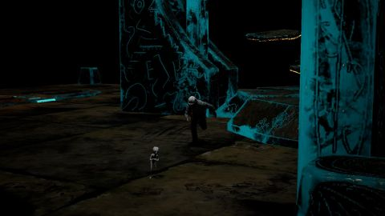
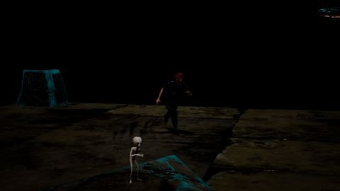
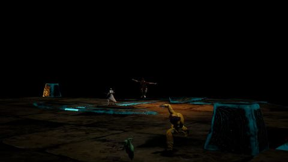
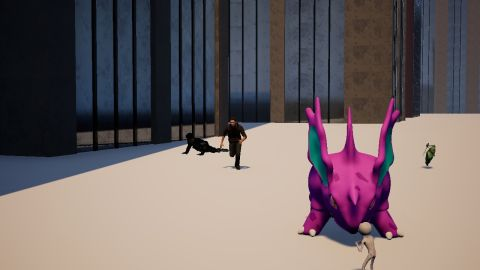
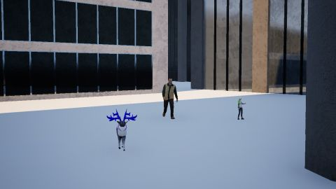
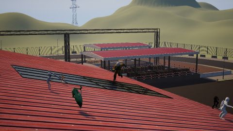
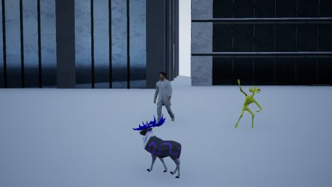
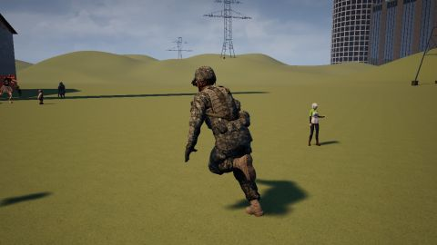
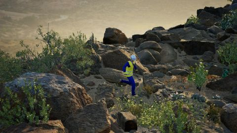
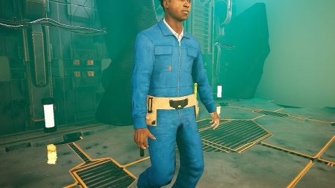

每段结果
封面是第 0 帧（翻回正向），点封面或 3D 打开查看器（3D 交接拼接后的轨迹）。数值是该段 avg_pts：深度云拼接 / 逐块对 GT / 整段一次，蓝色为同一设置下较高的模型。

a2_s10_w3_cam1静态
A2_S10_ROCKETBOX_H1M2/WORLD_00000003 · 1135 query 点
History v2 拼接0.709
Point4D head 拼接0.696
History v2 逐块对 GT0.555
Point4D head 逐块对 GT0.733
History v2 整段0.697
Point4D head 整段0.462

a2_s11_w2_cam1静态
A2_S11_ROCKETBOX_H1M2/WORLD_00000002 · 578 query 点
History v2 拼接0.630
Point4D head 拼接0.728
History v2 逐块对 GT0.738
Point4D head 逐块对 GT0.721
History v2 整段0.665
Point4D head 整段0.112

a2_s24_w3_cam1静态
A2_S24_ROCKETBOX_H1M2/WORLD_00000003 · 918 query 点
History v2 拼接0.755
Point4D head 拼接0.693
History v2 逐块对 GT0.803
Point4D head 逐块对 GT0.723
History v2 整段0.717
Point4D head 整段0.549

a2_s25_w4_cam0跟拍
A2_S25_ROCKETBOX_H1M2/WORLD_00000004 · 5438 query 点
History v2 拼接0.584
Point4D head 拼接0.670
History v2 逐块对 GT0.692
Point4D head 逐块对 GT0.684
History v2 整段0.533
Point4D head 整段0.402

a2_s26_w4_cam1静态
A2_S26_ROCKETBOX_H1M2/WORLD_00000004 · 1092 query 点
History v2 拼接0.629
Point4D head 拼接0.540
History v2 逐块对 GT0.624
Point4D head 逐块对 GT0.519
History v2 整段0.561
Point4D head 整段0.319

a2_s26_w7_cam0跟拍
A2_S26_ROCKETBOX_H1M2/WORLD_00000007 · 1674 query 点
History v2 拼接0.841
Point4D head 拼接0.835
History v2 逐块对 GT0.864
Point4D head 逐块对 GT0.841
History v2 整段0.805
Point4D head 整段0.627

a2_s27_w1_cam1静态
A2_S27_ROCKETBOX_H1M2/WORLD_00000001 · 1270 query 点
History v2 拼接0.254
Point4D head 拼接0.248
History v2 逐块对 GT0.301
Point4D head 逐块对 GT0.289
History v2 整段0.278
Point4D head 整段0.175

a2_s28_w3_cam0跟拍
A2_S28_ROCKETBOX_H1M2/WORLD_00000003 · 1298 query 点
History v2 拼接0.495
Point4D head 拼接0.722
History v2 逐块对 GT0.656
Point4D head 逐块对 GT0.766
History v2 整段0.671
Point4D head 整段0.580

a2_s30_w2_cam1静态
A2_S30_ROCKETBOX_H1M2/WORLD_00000002 · 3620 query 点
History v2 拼接0.583
Point4D head 拼接0.531
History v2 逐块对 GT0.529
Point4D head 逐块对 GT0.544
History v2 整段0.670
Point4D head 整段0.322

a2_s8_w0_cam1静态
A2_S8_ROCKETBOX_H1M2/WORLD_00000000 · 746 query 点
History v2 拼接0.594
Point4D head 拼接0.423
History v2 逐块对 GT0.497
Point4D head 逐块对 GT0.440
History v2 整段0.392
Point4D head 整段0.233

a3_s11_w7_cam1静态
A3_S11_ROCKETBOX_H1M2/WORLD_00000007 · 1328 query 点
History v2 拼接0.677
Point4D head 拼接0.695
History v2 逐块对 GT0.599
Point4D head 逐块对 GT0.595
History v2 整段0.563
Point4D head 整段0.542

a3_s12_w3_cam0跟拍
A3_S12_ROCKETBOX_H1M2/WORLD_00000003 · 2522 query 点
History v2 拼接0.799
Point4D head 拼接0.920
History v2 逐块对 GT0.803
Point4D head 逐块对 GT0.920
History v2 整段0.662
Point4D head 整段0.708

a3_s12_w6_cam1静态
A3_S12_ROCKETBOX_H1M2/WORLD_00000006 · 637 query 点
History v2 拼接0.218
Point4D head 拼接0.187
History v2 逐块对 GT0.227
Point4D head 逐块对 GT0.369
History v2 整段0.207
Point4D head 整段0.201

a3_s14_w0_cam1静态
A3_S14_ROCKETBOX_H1M2/WORLD_00000000 · 1033 query 点
History v2 拼接0.826
Point4D head 拼接0.865
History v2 逐块对 GT0.797
Point4D head 逐块对 GT0.868
History v2 整段0.830
Point4D head 整段0.547

a3_s14_w4_cam1静态
A3_S14_ROCKETBOX_H1M2/WORLD_00000004 · 3015 query 点
History v2 拼接0.486
Point4D head 拼接0.604
History v2 逐块对 GT0.582
Point4D head 逐块对 GT0.611
History v2 整段0.456
Point4D head 整段0.497

a3_s26_w0_cam0跟拍
A3_S26_ROCKETBOX_H1M2/WORLD_00000000 · 4896 query 点
History v2 拼接0.799
Point4D head 拼接0.818
History v2 逐块对 GT0.813
Point4D head 逐块对 GT0.848
History v2 整段0.699
Point4D head 整段0.682

a3_s29_w1_cam1静态
A3_S29_ROCKETBOX_H1M2/WORLD_00000001 · 419 query 点
History v2 拼接0.622
Point4D head 拼接0.554
History v2 逐块对 GT0.515
Point4D head 逐块对 GT0.565
History v2 整段0.569
Point4D head 整段0.404

a3_s33_w2_cam0跟拍
A3_S33_ROCKETBOX_H1M2/WORLD_00000002 · 2148 query 点
History v2 拼接0.748
Point4D head 拼接0.816
History v2 逐块对 GT0.751
Point4D head 逐块对 GT0.830
History v2 整段0.666
Point4D head 整段0.606

fa_s10_w2_cam1静态
FA_S10_ROCKETBOX_H1M2/WORLD_00000002 · 4118 query 点
History v2 拼接0.647
Point4D head 拼接0.747
History v2 逐块对 GT0.637
Point4D head 逐块对 GT0.756
History v2 整段0.642
Point4D head 整段0.582

fa_s10_w3_cam1静态
FA_S10_ROCKETBOX_H1M2/WORLD_00000003 · 1117 query 点
History v2 拼接0.675
Point4D head 拼接0.597
History v2 逐块对 GT0.630
Point4D head 逐块对 GT0.576
History v2 整段0.718
Point4D head 整段0.374

fa_s10_w7_cam0跟拍
FA_S10_ROCKETBOX_H1M2/WORLD_00000007 · 4040 query 点
History v2 拼接0.856
Point4D head 拼接0.871
History v2 逐块对 GT0.859
Point4D head 逐块对 GT0.878
History v2 整段0.822
Point4D head 整段0.518

fa_s12_w1_cam1静态
FA_S12_ROCKETBOX_H1M2/WORLD_00000001 · 457 query 点
History v2 拼接0.664
Point4D head 拼接0.526
History v2 逐块对 GT0.745
Point4D head 逐块对 GT0.537
History v2 整段0.660
Point4D head 整段0.345
fa_s12_w6_cam0跟拍
FA_S12_ROCKETBOX_H1M2/WORLD_00000006 · 1888 query 点
History v2 拼接0.758
Point4D head 拼接0.822
History v2 逐块对 GT0.772
Point4D head 逐块对 GT0.836
History v2 整段0.665
Point4D head 整段0.384

fa_s12_w6_cam1静态
FA_S12_ROCKETBOX_H1M2/WORLD_00000006 · 430 query 点
History v2 拼接0.630
Point4D head 拼接0.091
History v2 逐块对 GT0.745
Point4D head 逐块对 GT0.581
History v2 整段0.574
Point4D head 整段0.087

fa_s23_w5_cam1静态
FA_S23_ROCKETBOX_H1M2/WORLD_00000005 · 672 query 点
History v2 拼接0.751
Point4D head 拼接0.614
History v2 逐块对 GT0.739
Point4D head 逐块对 GT0.615
History v2 整段0.782
Point4D head 整段0.386
fa_s23_w6_cam0跟拍
FA_S23_ROCKETBOX_H1M2/WORLD_00000006 · 2564 query 点
History v2 拼接0.472
Point4D head 拼接0.302
History v2 逐块对 GT0.565
Point4D head 逐块对 GT0.598
History v2 整段0.494
Point4D head 整段0.257

fa_s23_w6_cam1静态
FA_S23_ROCKETBOX_H1M2/WORLD_00000006 · 872 query 点
History v2 拼接0.229
Point4D head 拼接0.360
History v2 逐块对 GT0.284
Point4D head 逐块对 GT0.363
History v2 整段0.233
Point4D head 整段0.191
fa_s26_w1_cam0跟拍
FA_S26_ROCKETBOX_H1M2/WORLD_00000001 · 1590 query 点
History v2 拼接0.875
Point4D head 拼接0.880
History v2 逐块对 GT0.891
Point4D head 逐块对 GT0.889
History v2 整段0.730
Point4D head 整段0.619

fa_s26_w4_cam0跟拍
FA_S26_ROCKETBOX_H1M2/WORLD_00000004 · 3890 query 点
History v2 拼接0.698
Point4D head 拼接0.770
History v2 逐块对 GT0.737
Point4D head 逐块对 GT0.697
History v2 整段0.702
Point4D head 整段0.490

fa_s26_w7_cam1静态
FA_S26_ROCKETBOX_H1M2/WORLD_00000007 · 1694 query 点
History v2 拼接0.762
Point4D head 拼接0.622
History v2 逐块对 GT0.556
Point4D head 逐块对 GT0.566
History v2 整段0.776
Point4D head 整段0.421

fa_s30_w0_cam0跟拍
FA_S30_ROCKETBOX_H1M2/WORLD_00000000 · 2682 query 点
History v2 拼接0.659
Point4D head 拼接0.722
History v2 逐块对 GT0.686
Point4D head 逐块对 GT0.740
History v2 整段0.665
Point4D head 整段0.358

fa_s32_w2_cam0跟拍
FA_S32_ROCKETBOX_H1M2/WORLD_00000002 · 2069 query 点
History v2 拼接0.435
Point4D head 拼接0.550
History v2 逐块对 GT0.568
Point4D head 逐块对 GT0.573
History v2 整段0.538
Point4D head 整段0.478

fa_s32_w2_cam1静态
FA_S32_ROCKETBOX_H1M2/WORLD_00000002 · 1793 query 点
History v2 拼接0.510
Point4D head 拼接0.610
History v2 逐块对 GT0.655
Point4D head 逐块对 GT0.594
History v2 整段0.505
Point4D head 整段0.393

fa_s32_w4_cam0跟拍
FA_S32_ROCKETBOX_H1M2/WORLD_00000004 · 2898 query 点
History v2 拼接0.853
Point4D head 拼接0.923
History v2 逐块对 GT0.853
Point4D head 逐块对 GT0.924
History v2 整段0.663
Point4D head 整段0.551

fa_s32_w5_cam0跟拍
FA_S32_ROCKETBOX_H1M2/WORLD_00000005 · 2430 query 点
History v2 拼接0.940
Point4D head 拼接0.936
History v2 逐块对 GT0.948
Point4D head 逐块对 GT0.936
History v2 整段0.903
Point4D head 整段0.751

fa_s32_w6_cam0跟拍
FA_S32_ROCKETBOX_H1M2/WORLD_00000006 · 3551 query 点
History v2 拼接0.642
Point4D head 拼接0.532
History v2 逐块对 GT0.619
Point4D head 逐块对 GT0.530
History v2 整段0.605
Point4D head 整段0.552

fa_s33_w6_cam0跟拍
FA_S33_ROCKETBOX_H1M2/WORLD_00000006 · 3207 query 点
History v2 拼接0.693
Point4D head 拼接0.684
History v2 逐块对 GT0.702
Point4D head 逐块对 GT0.695
History v2 整段0.638
Point4D head 整段0.436
fv_s27_w1_cam1静态
FV_S27_ROCKETBOX_H1M2/WORLD_00000001 · 928 query 点
History v2 拼接0.727
Point4D head 拼接0.632
History v2 逐块对 GT0.704
Point4D head 逐块对 GT0.590
History v2 整段0.714
Point4D head 整段0.408

fv_s28_w4_cam0跟拍
FV_S28_ROCKETBOX_H1M2/WORLD_00000004 · 1605 query 点
History v2 拼接0.622
Point4D head 拼接0.622
History v2 逐块对 GT0.610
Point4D head 逐块对 GT0.622
History v2 整段0.467
Point4D head 整段0.282

fv_s34_w0_cam0跟拍
FV_S34_ROCKETBOX_H1M2/WORLD_00000000 · 2822 query 点
History v2 拼接0.647
Point4D head 拼接0.583
History v2 逐块对 GT0.651
Point4D head 逐块对 GT0.689
History v2 整段0.587
Point4D head 整段0.374
fv_s35_w3_cam0跟拍
FV_S35_ROCKETBOX_H1M2/WORLD_00000003 · 2766 query 点
History v2 拼接0.719
Point4D head 拼接0.667
History v2 逐块对 GT0.740
Point4D head 逐块对 GT0.708
History v2 整段0.612
Point4D head 整段0.446

fv_s35_w4_cam1静态
FV_S35_ROCKETBOX_H1M2/WORLD_00000004 · 2353 query 点
History v2 拼接0.258
Point4D head 拼接0.408
History v2 逐块对 GT0.355
Point4D head 逐块对 GT0.511
History v2 整段0.341
Point4D head 整段0.343

fv_s7_w2_cam0跟拍
FV_S7_ROCKETBOX_H1M2/WORLD_00000002 · 2999 query 点
History v2 拼接0.755
Point4D head 拼接0.794
History v2 逐块对 GT0.752
Point4D head 逐块对 GT0.806
History v2 整段0.587
Point4D head 整段0.383

fv_s8_w3_cam0跟拍
FV_S8_ROCKETBOX_H1M2/WORLD_00000003 · 3712 query 点
History v2 拼接0.788
Point4D head 拼接0.872
History v2 逐块对 GT0.789
Point4D head 逐块对 GT0.875
History v2 整段0.724
Point4D head 整段0.403
fv_s9_w2_cam1静态
FV_S9_ROCKETBOX_H1M2/WORLD_00000002 · 1046 query 点
History v2 拼接0.678
Point4D head 拼接0.649
History v2 逐块对 GT0.558
Point4D head 逐块对 GT0.554
History v2 整段0.674
Point4D head 整段0.382

fv_s9_w3_cam1静态
FV_S9_ROCKETBOX_H1M2/WORLD_00000003 · 962 query 点
History v2 拼接0.308
Point4D head 拼接0.313
History v2 逐块对 GT0.316
Point4D head 逐块对 GT0.341
History v2 整段0.323
Point4D head 整段0.300
nk_s23_w3_cam0跟拍
NK_S23_ROCKETBOX_H1M2/WORLD_00000003 · 4330 query 点
History v2 拼接0.858
Point4D head 拼接0.908
History v2 逐块对 GT0.865
Point4D head 逐块对 GT0.911
History v2 整段0.664
Point4D head 整段0.571
nk_s24_w6_cam1静态
NK_S24_ROCKETBOX_H1M2/WORLD_00000006 · 64 query 点
History v2 拼接0.748
Point4D head 拼接0.702
History v2 逐块对 GT0.840
Point4D head 逐块对 GT0.646
History v2 整段0.679
Point4D head 整段0.709

nk_s25_w3_cam0跟拍
NK_S25_ROCKETBOX_H1M2/WORLD_00000003 · 1343 query 点
History v2 拼接0.775
Point4D head 拼接0.790
History v2 逐块对 GT0.763
Point4D head 逐块对 GT0.789
History v2 整段0.575
Point4D head 整段0.459

nk_s25_w4_cam0跟拍
NK_S25_ROCKETBOX_H1M2/WORLD_00000004 · 1712 query 点
History v2 拼接0.712
Point4D head 拼接0.764
History v2 逐块对 GT0.759
Point4D head 逐块对 GT0.801
History v2 整段0.533
Point4D head 整段0.463

nk_s27_w3_cam0跟拍
NK_S27_ROCKETBOX_H1M2/WORLD_00000003 · 1897 query 点
History v2 拼接0.586
Point4D head 拼接0.722
History v2 逐块对 GT0.781
Point4D head 逐块对 GT0.761
History v2 整段0.682
Point4D head 整段0.442

nk_s28_w0_cam0跟拍
NK_S28_ROCKETBOX_H1M2/WORLD_00000000 · 2375 query 点
History v2 拼接0.941
Point4D head 拼接0.929
History v2 逐块对 GT0.941
Point4D head 逐块对 GT0.930
History v2 整段0.803
Point4D head 整段0.730

nq_s10_w7_cam1静态
NQ_S10_ROCKETBOX_H1M2/WORLD_00000007 · 279 query 点
History v2 拼接0.589
Point4D head 拼接0.548
History v2 逐块对 GT0.678
Point4D head 逐块对 GT0.625
History v2 整段0.633
Point4D head 整段0.506

nq_s23_w2_cam0跟拍
NQ_S23_ROCKETBOX_H1M2/WORLD_00000002 · 1829 query 点
History v2 拼接0.688
Point4D head 拼接0.715
History v2 逐块对 GT0.710
Point4D head 逐块对 GT0.753
History v2 整段0.660
Point4D head 整段0.479
nq_s23_w2_cam1静态
NQ_S23_ROCKETBOX_H1M2/WORLD_00000002 · 1046 query 点
History v2 拼接0.721
Point4D head 拼接0.605
History v2 逐块对 GT0.688
Point4D head 逐块对 GT0.576
History v2 整段0.699
Point4D head 整段0.381

nq_s26_w3_cam0跟拍
NQ_S26_ROCKETBOX_H1M2/WORLD_00000003 · 719 query 点
History v2 拼接0.655
Point4D head 拼接0.539
History v2 逐块对 GT0.707
Point4D head 逐块对 GT0.538
History v2 整段0.511
Point4D head 整段0.234
nq_s26_w6_cam0跟拍
NQ_S26_ROCKETBOX_H1M2/WORLD_00000006 · 1769 query 点
History v2 拼接0.587
Point4D head 拼接0.574
History v2 逐块对 GT0.681
Point4D head 逐块对 GT0.749
History v2 整段0.572
Point4D head 整段0.536

nq_s26_w7_cam1静态
NQ_S26_ROCKETBOX_H1M2/WORLD_00000007 · 1422 query 点
History v2 拼接0.503
Point4D head 拼接0.582
History v2 逐块对 GT0.426
Point4D head 逐块对 GT0.548
History v2 整段0.551
Point4D head 整段0.272
nq_s27_w5_cam0跟拍
NQ_S27_ROCKETBOX_H1M2/WORLD_00000005 · 2042 query 点
History v2 拼接0.730
Point4D head 拼接0.771
History v2 逐块对 GT0.819
Point4D head 逐块对 GT0.782
History v2 整段0.759
Point4D head 整段0.433

nq_s28_w5_cam0跟拍
NQ_S28_ROCKETBOX_H1M2/WORLD_00000005 · 2504 query 点
History v2 拼接0.685
Point4D head 拼接0.739
History v2 逐块对 GT0.743
Point4D head 逐块对 GT0.776
History v2 整段0.666
Point4D head 整段0.567
nq_s29_w7_cam0跟拍
NQ_S29_ROCKETBOX_H1M2/WORLD_00000007 · 3481 query 点
History v2 拼接0.796
Point4D head 拼接0.833
History v2 逐块对 GT0.786
Point4D head 逐块对 GT0.833
History v2 整段0.678
Point4D head 整段0.658
nq_s29_w7_cam1静态
NQ_S29_ROCKETBOX_H1M2/WORLD_00000007 · 1639 query 点
History v2 拼接0.835
Point4D head 拼接0.783
History v2 逐块对 GT0.922
Point4D head 逐块对 GT0.849
History v2 整段0.801
Point4D head 整段0.587

nq_s30_w2_cam1静态
NQ_S30_ROCKETBOX_H1M2/WORLD_00000002 · 637 query 点
History v2 拼接0.576
Point4D head 拼接0.672
History v2 逐块对 GT0.632
Point4D head 逐块对 GT0.683
History v2 整段0.553
Point4D head 整段0.319

nq_s31_w1_cam1静态
NQ_S31_ROCKETBOX_H1M2/WORLD_00000001 · 654 query 点
History v2 拼接0.440
Point4D head 拼接0.353
History v2 逐块对 GT0.471
Point4D head 逐块对 GT0.395
History v2 整段0.475
Point4D head 整段0.177

nq_s31_w5_cam0跟拍
NQ_S31_ROCKETBOX_H1M2/WORLD_00000005 · 2347 query 点
History v2 拼接0.630
Point4D head 拼接0.724
History v2 逐块对 GT0.618
Point4D head 逐块对 GT0.712
History v2 整段0.630
Point4D head 整段0.557

nq_s32_w3_cam0跟拍
NQ_S32_ROCKETBOX_H1M2/WORLD_00000003 · 3598 query 点
History v2 拼接0.660
Point4D head 拼接0.700
History v2 逐块对 GT0.686
Point4D head 逐块对 GT0.695
History v2 整段0.571
Point4D head 整段0.592
nq_s7_w1_cam0跟拍
NQ_S7_ROCKETBOX_H1M2/WORLD_00000001 · 3415 query 点
History v2 拼接0.492
Point4D head 拼接0.512
History v2 逐块对 GT0.594
Point4D head 逐块对 GT0.604
History v2 整段0.522
Point4D head 整段0.289

nq_s7_w1_cam1静态
NQ_S7_ROCKETBOX_H1M2/WORLD_00000001 · 20843 query 点
History v2 拼接0.284
Point4D head 拼接0.730
History v2 逐块对 GT0.789
Point4D head 逐块对 GT0.885
History v2 整段0.278
Point4D head 整段0.458

nq_s7_w3_cam0跟拍
NQ_S7_ROCKETBOX_H1M2/WORLD_00000003 · 1958 query 点
History v2 拼接0.559
Point4D head 拼接0.577
History v2 逐块对 GT0.653
Point4D head 逐块对 GT0.689
History v2 整段0.665
Point4D head 整段0.535

nq_s7_w3_cam1静态
NQ_S7_ROCKETBOX_H1M2/WORLD_00000003 · 2190 query 点
History v2 拼接0.670
Point4D head 拼接0.678
History v2 逐块对 GT0.719
Point4D head 逐块对 GT0.691
History v2 整段0.679
Point4D head 整段0.525
nq_s8_w0_cam0跟拍
NQ_S8_ROCKETBOX_H1M2/WORLD_00000000 · 1644 query 点
History v2 拼接0.673
Point4D head 拼接0.713
History v2 逐块对 GT0.749
Point4D head 逐块对 GT0.827
History v2 整段0.666
Point4D head 整段0.561

nq_s8_w3_cam0跟拍
NQ_S8_ROCKETBOX_H1M2/WORLD_00000003 · 1328 query 点
History v2 拼接0.585
Point4D head 拼接0.671
History v2 逐块对 GT0.652
Point4D head 逐块对 GT0.759
History v2 整段0.373
Point4D head 整段0.414
nq_s8_w4_cam1静态
NQ_S8_ROCKETBOX_H1M2/WORLD_00000004 · 508 query 点
History v2 拼接0.212
Point4D head 拼接0.434
History v2 逐块对 GT0.385
Point4D head 逐块对 GT0.313
History v2 整段0.255
Point4D head 整段0.280

nq_s8_w5_cam1静态
NQ_S8_ROCKETBOX_H1M2/WORLD_00000005 · 615 query 点
History v2 拼接0.766
Point4D head 拼接0.733
History v2 逐块对 GT0.806
Point4D head 逐块对 GT0.756
History v2 整段0.650
Point4D head 整段0.538

ru_s9_w1_cam0跟拍
RU_S9_ROCKETBOX_H1M2/WORLD_00000001 · 7801 query 点
History v2 拼接0.813
Point4D head 拼接0.923
History v2 逐块对 GT0.816
Point4D head 逐块对 GT0.928
History v2 整段0.720
Point4D head 整段0.707

ruc3_s10_w0_cam0跟拍
RUC3_S10_ROCKETBOX_H1M2/WORLD_00000000 · 10348 query 点
History v2 拼接0.897
Point4D head 拼接0.951
History v2 逐块对 GT0.895
Point4D head 逐块对 GT0.953
History v2 整段0.842
Point4D head 整段0.802
ruc3_s7_w0_cam0跟拍
RUC3_S7_ROCKETBOX_H1M2/WORLD_00000000 · 8445 query 点
History v2 拼接0.961
Point4D head 拼接0.961
History v2 逐块对 GT0.963
Point4D head 逐块对 GT0.974
History v2 整段0.895
Point4D head 整段0.814

ruc3_s9_w1_cam0跟拍
RUC3_S9_ROCKETBOX_H1M2/WORLD_00000001 · 7801 query 点
History v2 拼接0.818
Point4D head 拼接0.921
History v2 逐块对 GT0.816
Point4D head 逐块对 GT0.925
History v2 整段0.714
Point4D head 整段0.694

ruc5_s23_w0_cam1静态
RUC5_S23_ROCKETBOX_H1M2/WORLD_00000000 · 3887 query 点
History v2 拼接0.921
Point4D head 拼接0.964
History v2 逐块对 GT0.928
Point4D head 逐块对 GT0.964
History v2 整段0.843
Point4D head 整段0.735

sf_s10_w5_cam1静态
SF_S10_ROCKETBOX_H1M2/WORLD_00000005 · 1151 query 点
History v2 拼接0.871
Point4D head 拼接0.896
History v2 逐块对 GT0.864
Point4D head 逐块对 GT0.904
History v2 整段0.791
Point4D head 整段0.679

sf_s20_w0_cam0跟拍
SF_S20_ROCKETBOX_H1M2/WORLD_00000000 · 7779 query 点
History v2 拼接0.926
Point4D head 拼接0.966
History v2 逐块对 GT0.926
Point4D head 逐块对 GT0.966
History v2 整段0.879
Point4D head 整段0.820

sfc3_s10_w5_cam1静态
SFC3_S10_ROCKETBOX_H1M2/WORLD_00000005 · 1692 query 点
History v2 拼接0.312
Point4D head 拼接0.681
History v2 逐块对 GT0.729
Point4D head 逐块对 GT0.744
History v2 整段0.637
Point4D head 整段0.499

sfc3_s16_w2_cam1静态
SFC3_S16_ROCKETBOX_H1M2/WORLD_00000002 · 2322 query 点
History v2 拼接0.760
Point4D head 拼接0.830
History v2 逐块对 GT0.766
Point4D head 逐块对 GT0.840
History v2 整段0.691
Point4D head 整段0.625
sfc3_s18_w2_cam1静态
SFC3_S18_ROCKETBOX_H1M2/WORLD_00000002 · 3586 query 点
History v2 拼接0.378
Point4D head 拼接0.832
History v2 逐块对 GT0.503
Point4D head 逐块对 GT0.832
History v2 整段0.725
Point4D head 整段0.515

sfc5_s23_w1_cam1静态
SFC5_S23_ROCKETBOX_H1M2/WORLD_00000001 · 2161 query 点
History v2 拼接0.700
Point4D head 拼接0.723
History v2 逐块对 GT0.670
Point4D head 逐块对 GT0.737
History v2 整段0.675
Point4D head 整段0.406

sfc5_s26_w3_cam1静态
SFC5_S26_ROCKETBOX_H1M2/WORLD_00000003 · 1858 query 点
History v2 拼接0.807
Point4D head 拼接0.873
History v2 逐块对 GT0.833
Point4D head 逐块对 GT0.879
History v2 整段0.671
Point4D head 整段0.650

sfc5_s27_w0_cam1静态
SFC5_S27_ROCKETBOX_H1M2/WORLD_00000000 · 1740 query 点
History v2 拼接0.903
Point4D head 拼接0.901
History v2 逐块对 GT0.906
Point4D head 逐块对 GT0.905
History v2 整段0.807
Point4D head 整段0.673

sfc5_s27_w3_cam1静态
SFC5_S27_ROCKETBOX_H1M2/WORLD_00000003 · 5969 query 点
History v2 拼接0.722
Point4D head 拼接0.784
History v2 逐块对 GT0.752
Point4D head 逐块对 GT0.785
History v2 整段0.680
Point4D head 整段0.649

sfc5_s31_w3_cam0跟拍
SFC5_S31_ROCKETBOX_H1M2/WORLD_00000003 · 8063 query 点
History v2 拼接0.824
Point4D head 拼接0.922
History v2 逐块对 GT0.825
Point4D head 逐块对 GT0.930
History v2 整段0.700
Point4D head 整段0.801

sfc5_s32_w2_cam0跟拍
SFC5_S32_ROCKETBOX_H1M2/WORLD_00000002 · 8534 query 点
History v2 拼接0.843
Point4D head 拼接0.849
History v2 逐块对 GT0.827
Point4D head 逐块对 GT0.862
History v2 整段0.686
Point4D head 整段0.710

sfc5_s38_w1_cam0跟拍
SFC5_S38_ROCKETBOX_H1M2/WORLD_00000001 · 7478 query 点
History v2 拼接0.844
Point4D head 拼接0.896
History v2 逐块对 GT0.839
Point4D head 逐块对 GT0.913
History v2 整段0.721
Point4D head 整段0.722

sfc5_s41_w0_cam0跟拍
SFC5_S41_ROCKETBOX_H1M2/WORLD_00000000 · 10216 query 点
History v2 拼接0.946
Point4D head 拼接0.962
History v2 逐块对 GT0.953
Point4D head 逐块对 GT0.965
History v2 整段0.829
Point4D head 整段0.797
sfc5_s47_w1_cam1静态
SFC5_S47_ROCKETBOX_H1M2/WORLD_00000001 · 2618 query 点
History v2 拼接0.680
Point4D head 拼接0.665
History v2 逐块对 GT0.693
Point4D head 逐块对 GT0.686
History v2 整段0.668
Point4D head 整段0.511

sfc5_s49_w1_cam0跟拍
SFC5_S49_ROCKETBOX_H1M2/WORLD_00000001 · 7994 query 点
History v2 拼接0.762
Point4D head 拼接0.845
History v2 逐块对 GT0.739
Point4D head 逐块对 GT0.844
History v2 整段0.601
Point4D head 整段0.647
sfc5_s50_w0_cam1静态
SFC5_S50_ROCKETBOX_H1M2/WORLD_00000000 · 6146 query 点
History v2 拼接0.729
Point4D head 拼接0.645
History v2 逐块对 GT0.771
Point4D head 逐块对 GT0.651
History v2 整段0.746
Point4D head 整段0.726
sfc5_s52_w1_cam1静态
SFC5_S52_ROCKETBOX_H1M2/WORLD_00000001 · 4007 query 点
History v2 拼接0.665
Point4D head 拼接0.664
History v2 逐块对 GT0.645
Point4D head 逐块对 GT0.673
History v2 整段0.724
Point4D head 整段0.608

sfc5_s53_w0_cam0跟拍
SFC5_S53_ROCKETBOX_H1M2/WORLD_00000000 · 6986 query 点
History v2 拼接0.939
Point4D head 拼接0.948
History v2 逐块对 GT0.956
Point4D head 逐块对 GT0.963
History v2 整段0.898
Point4D head 整段0.820

sfc5_s53_w0_cam1静态
SFC5_S53_ROCKETBOX_H1M2/WORLD_00000000 · 1914 query 点
History v2 拼接0.913
Point4D head 拼接0.910
History v2 逐块对 GT0.900
Point4D head 逐块对 GT0.907
History v2 整段0.796
Point4D head 整段0.658
sfc5_s53_w2_cam1静态
SFC5_S53_ROCKETBOX_H1M2/WORLD_00000002 · 3281 query 点
History v2 拼接0.551
Point4D head 拼接0.558
History v2 逐块对 GT0.679
Point4D head 逐块对 GT0.557
History v2 整段0.738
Point4D head 整段0.678

sfc5_s54_w6_cam1静态
SFC5_S54_ROCKETBOX_H1M2/WORLD_00000006 · 3206 query 点
History v2 拼接0.785
Point4D head 拼接0.740
History v2 逐块对 GT0.591
Point4D head 逐块对 GT0.738
History v2 整段0.622
Point4D head 整段0.614